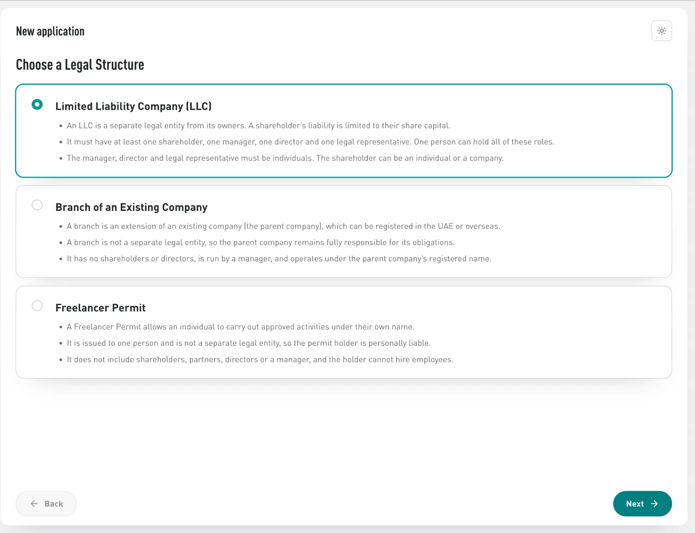
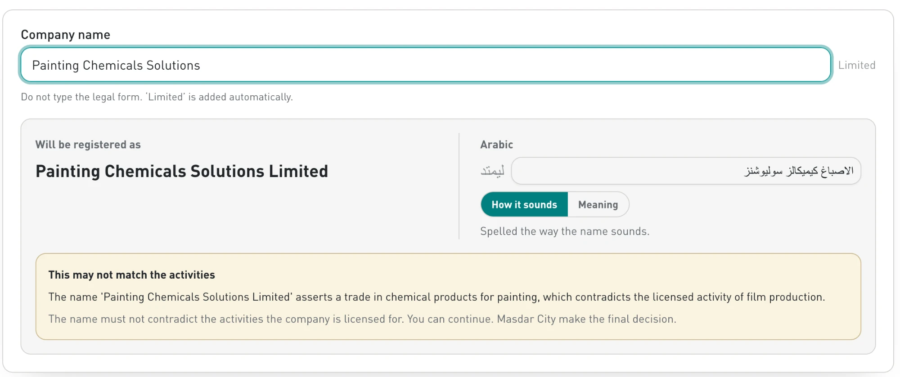
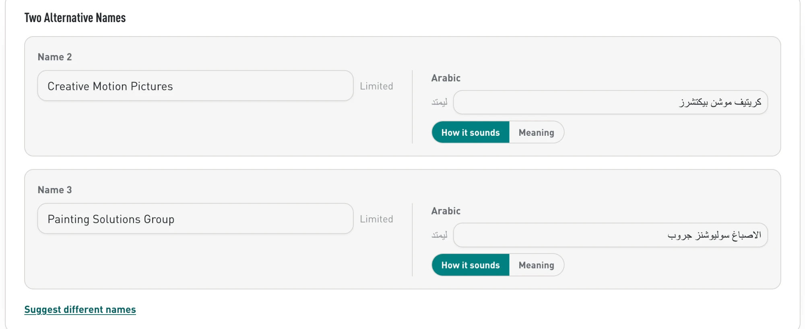
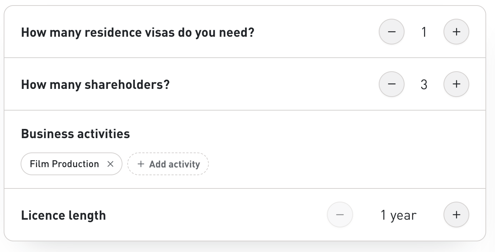
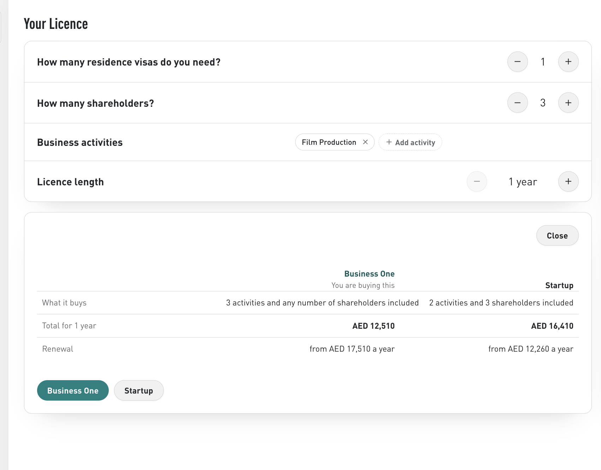
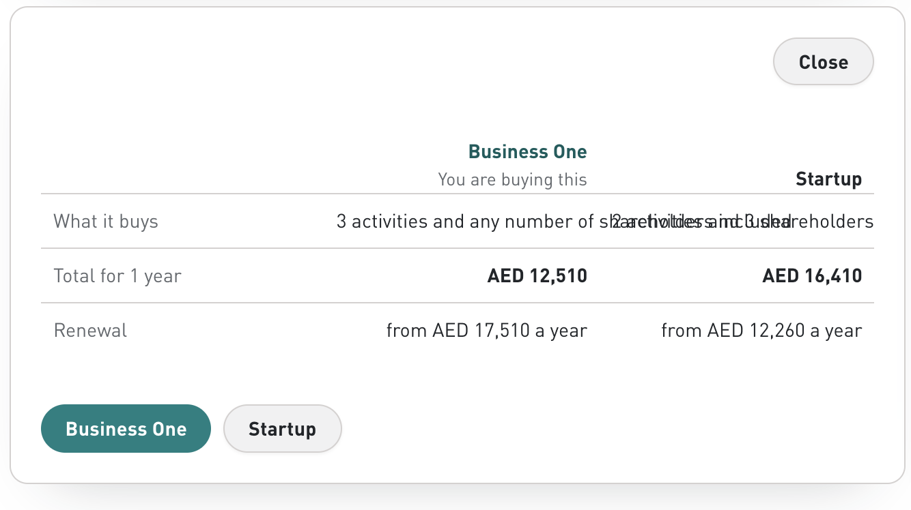
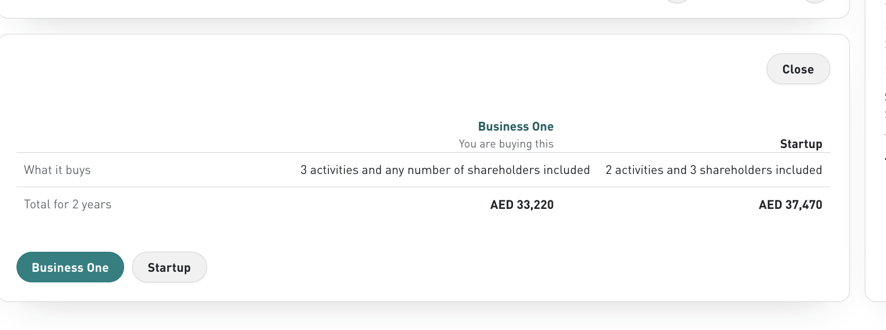
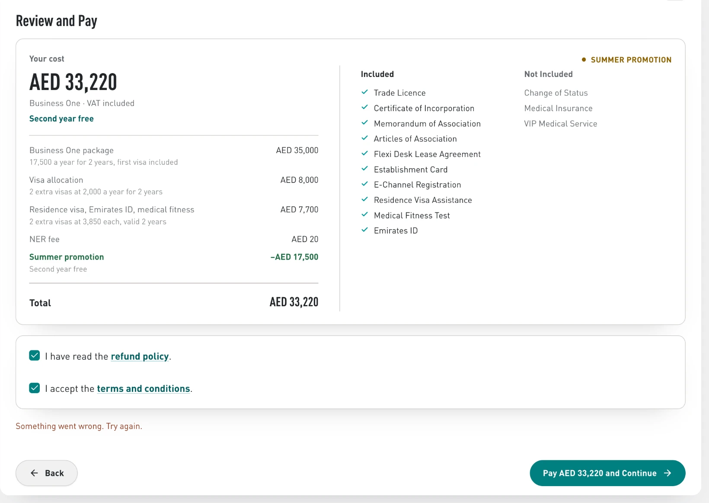
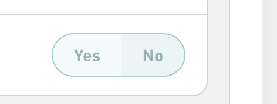

Fixes for Pavan
Registration flow on stageapp: Dhanraj’s walkthrough 3 Oct, and the call with Mazen 5 Oct
| # | Step | Issue | Fix | Screenshot |
|---|---|---|---|---|
| 1 | Legal Structure | The drawings on the three cards are gone | Put them back |  |
| 2 | Company Name | “How it sounds” gave الاصباغ كيميكالز سوليوشنز: “Painting” translated, the rest spelled out | Done (5 Oct call). Remove the How it sounds / Meaning toggle and the line under it |  |
| 3 | Company Name | Name 2 and Name 3: spacing is off | Fix the spacing |  |
| 4 | Package | Business activities chips sit left under the label, or float mid-row, not right like the other rows | Align with the other rows’ controls |   |
| 5 | Package · Compare | “What it buys” text overlaps between the columns | Done (5 Oct call). Let the cells wrap |  |
| 6 | Package · Compare | Business One column is centred, Startup is right-aligned | Align both the same |  |
| 7 | Payment | Pay AED 33,220 and Continue returns “Something went wrong. Try again.” | Payment fails, fix it |  |
| 8 | Stakeholders | Once one person is the legal representative, everyone else’s Yes / No is greyed out with nothing selected, and No can’t be picked | Select No for them automatically |  |


From the call with Mazen, 5 Oct
| # | Step | Now | Change |
|---|---|---|---|
| 9 | Package | “Licence length” | Rename to “Licence duration” |
| 10 | Stakeholders | Choosing a person already on the application doesn’t expand their card | Expand it, as adding someone new does |
| 11 | Stakeholders | Authorised signatory’s Arabic name: two letters swapped. The document has ياسر, we read يارس (س and ر reversed) | Fix the Arabic name reading; the rest of the name was right |
| 12 | Ownership | “Voting power differs from the share split” | Remove it |
| 13 | Ownership | Nobody at 25%: “On what basis” options | Use the definitions on Masdar City’s UBO form (wording to come from Mazen) |
| 14 | Documents | A person who is UBO by control doesn’t say so | Add “UBO by means of control” to their roles |
| 15 | Documents · corporate shareholder | Requirements change with where the company is registered; good standing only over 2 years; trade licence label shows as certificate of incorporation | Four required slots for every company, no “where is it registered” question: 1. Active status: licence, registry extract, certificate of good standing or certificate of incumbency 2. MOA 3. AOA. If they only have one of MOA / AOA, they upload it in both 4. Shareholding distribution: certificate of incumbency, registry extract, share certificate, or shareholder list issued by the registrar No notarisation. Descriptions to come from Mazen |
| 16 | Business Activities | Activity descriptions are cut off (Excel limit) | Take descriptions from the CSV export of the live list, 1,167 activities |
From the call with Mazen, 6 Oct
| # | Step | Now | Change |
|---|---|---|---|
| 17 | Stakeholders · corporate shareholder | Shareholders inside a corporate shareholder are asked for details even when they are not UBOs | Ask nothing from them. Only UBOs and the corporate shareholder’s authorised signatory give details |
| 18 | Declaration | “Verify passport” runs the ID check without the declaration; only the invite link sends both | Every signer gets the declaration, signature and ID check together, whichever way they start |
| 19 | Generated documents | Signatures are not placed on the generated documents | Place the declaration signature on: the resolution (shareholders; each corporate shareholder’s authorised signatory), the UBO form and the lease agreement (manager) |
| 20 | Additional Documents, high risk | Asks audited accounts from the second layer, the beneficial owner and the company itself | Ask audited accounts from the direct shareholders only |
| 21 | Freelancer | Father’s name is asked | Remove it |
| 22 | Freelancer · Activities | “What is your primary activity?” | Remove it. The permit carries the applicant’s name only |
| 23 | Branch | “How many residence visas do you need?” | Remove it for a branch |
| 24 | Generated · certificate of incorporation, MOA | Arabic text is misaligned (Hungrybird Limited); certificate layout sits 22.3pt low | Certificate: replace the template with MCFZ’s current certificate (Tots, Applied Geo, Arxstone, Jun–Jul 2026); ours is built on a 26 Feb 2025 template. Company name in red bold, as the current system. MOA: align (generated-documents fixes C1–C5, M1–M4) |
| 25 | Generated · AOA | Clause 2 prints AED 100,000.00 (Dirhams One Hundred Thousand); Hungrybird’s MOA says AED 4,000,000. Clause 1(c) shows a stray mark and gap after “Company”: a white box covers the old “Finassist Advisory Limited” | Print the company’s share capital in figures and words. Replace the old text instead of covering it (A1, A2) |
| 26 | Generated · licence | Arabic segment missing (“consultancy”); QR code placement | Add the Arabic segment; QR code at the bottom, centred, 35.7pt under the last activity (L1, L3) |
| 27 | Generated · lease agreement | Old 2023 Flexi Desk template, US Letter; no signatures | Use MCFZ’s Smart Station lease, A4 (lease-templates-2026-10-06.md). Manager signature, and Masdar City’s signature and stamp (Mazen sends them) |
| 28 | Generated · UBO form | Plain text | Follow the system’s form: tables, company name, type and licence number; a branch version. Samples in the shared drive |
| 29 | Staff · documents | The licence and documents only download | Open them in a new tab to preview |
| 30 | Sidebar · application switcher | Still reads “Leon Van Der Walt’s new company” after the name is chosen (Arxstone Global Two Limited shows only in the page header) | Show the chosen company name as soon as it is set |
| 31 | Additional Documents | Source of funds asked of the second layer, the beneficial owner and the company itself | First layer only: direct shareholders and the master entity |
| 32 | Additional Documents | A dropdown asks how the money was made (“selling property”) | Remove it. Two plain uploads named “Source of funds”: company (latest audited financial statements, or bank statements for the last 3 months), person (bank statements, last 3 months) |
| 33 | Additional Documents | Screening hit on a person in a low or medium case asks for source of funds | Don’t stop or ask. Compliance checks the hit; ask only if it matches |
| 34 | Chat | After payment, routed to customer experience (Innovation Zone) | |
| 35 | Console · service request | Every request shows the company’s internal documents (MOA, AOA, certificate) | Three tabs per request, its own documents only: Supporting (sent to ICP), Internal (generated: licence, covering letter, manager passport), ICP (returned by ICP). Wireframe: documents viewer |
| 36 | Console · establishment card | Manager security clearance listed under ICP documents | Move it to Supporting documents on this request |
| 37 | Console · company | No date of incorporation or licence expiry | Show both at account and company level |
| 38 | Generated · name reservation certificate | Shared with the customer | Park until there is a customer template |
| 39 | Documents · corporate shareholder | Active status and Share distribution lists (row 15) | Per Mazen’s checklist, 6 Oct: Active status also accepts a certificate of incorporation. Share distribution accepts a shareholder list notarised or issued by an official registrar and verifiable online, a share certificate, a registry extract or a certificate of incumbency |
| 40 | Documents · ownership chain | Companies further up the chain asked for the same four documents | Active status and Share distribution only. No Memorandum or Articles |
| 41 | Additional Documents · source of funds | Asked on risk rating only | Ask every direct shareholder, person or company, when the case is medium-high or high risk or share capital is over AED 100,000 |
| 42 | Documents · each person | No signature anywhere in registration | Add a Signature row under Passport. It opens straight after the passport and face check (Didit): declaration, the documents it goes on, draw or type, Sign. Wireframe: https://mcfz-esign.vercel.app |
| 43 | Documents · signature | Signing later, in a new session | Ask for the face check again before signing. The passport stays |
| 44 | Documents · Invite dialog | “Anyone with the link can upload for them.” | “{Name} verifies their passport, checks their face and signs. They see nothing else. Only {Name} can sign, from their own phone.” |
| 45 | Documents · Next | Turns on when documents are in | Also needs every shareholder, each corporate shareholder’s authorised signatory and the manager to have signed. Say what is missing beside the button |
| 46 | Generated documents | Signatures not placed | Place each signature with pdf-lib at MCFZ’s signature lines (resolution: shareholders and corporate signatories; UBO declaration and lease: manager), then seal the PDF with @signpdf and a document-signing certificate |
| 47 | Console · case | No record of who signed | Signing record per signer: time, device, IP, Didit session and match, passport number, declaration version, documents and their SHA-256. Wireframe screens 12–14 on the earlier version |
Rows 19 and 24 to 29, document by document: every generated document beside MCFZ’s, each difference numbered: mcfz-docs.vercel.app
Waiting on Mazen, not to build yet: one sheet of every person type and their exact documents; wording for the corporate slots; licence numbering (own series or Salesforce), pending Hamza.